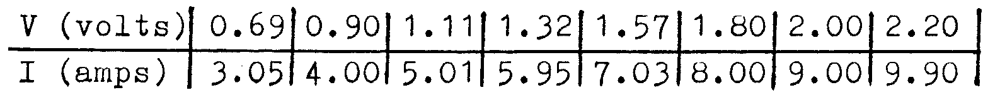

A1-2: Use of Books and Graph Drawing¶
Apparatus¶
Selection of Physics books; 4 or 5 figure log tables; 1 sheet of graph paper.
Procedure¶
Use the books provided to answer the following:
What is rectilinear motion?
Name 3 ferromagnetic materials (is there a 4th?).
What are the unit prefixes (letter and name) for:
\(10^{12},\ 10^9,\ 10^6,\ 10^3,\ 10^2,\ 10^{-2}, 10^{-3},\ 10^{-6},\ 10^{-9},\ 10^{-12}\)
What are the letters of the Greek alphabet? Give their names.
What does ‘Non-Ohmic conductor’ mean? Give four examples.
What is the velocity of sound in air at \(0 \text{°C}\)?
\(0 \text{°C}\) equals how many K, exactly?
What are the main types of experimental error?
\(a = 5 \pm 0.005\text{m}\) and \(b = 3.5 \pm 0.01\text{m}\). What is the error in \(a+b\) in metres and in %? What is the % error in \(ab\)?
Define the metre, the kilogram, the second, the newton, and the joule. Which are base units and why?
Use 4- or 5-figure log tables to calculate the following:
- \(28.5 \times 137\)
- \(0.056 \times 55.62\)
- \(0.0335 \div 0.48\)
- \(73500 \div 0.6885\)
- \(5.322^4\)
- \(\sqrt[3]{6.03}\)
- \(\log (0.002)\)
- \(\sin (26°\ 36')\)
- \(\cos^{-1}(0.391)\)
- \(\tan (53.552°)\)
- \(\tan (216°)\)
- \(\cos (126°)\)
- Convert to radians: \(\quad 90° \qquad 72° \qquad 200°\)
- Convert to degrees: \(\quad 1.12\text{rad} \qquad 3 \pi\text{rad} \qquad 3\pi/2\text{rad}\)
- \(\ln{(7.9)}\)
- \(e^{1.5}\)
- \(\ln (0.14)\)
- \(\ln (40)\)
- \(e^{15}\)
- \(e^{0.02}\)
- \(\sqrt{553}\)
- \(\sqrt{0.07}\)
Graphs.
In an Ohm’s Law experiment, where \(V = IR\), the following readings were obtained:

Draw a graph of \(V\) against \(I\), and hence find \(R\).
A cell of internal resistance \(r\) and emf \(E\) supplies current through a resistor \(R\). The equation which applies is:
\[r=R \left(\frac{E-V}{V}\right)\]Readings of \(R\) and \(V\) are obtained, and \(1/R\) is plotted against \(1/V\). Explain how the gradient and \(y\)-intercept can be used to find \(E\) and \(r\).